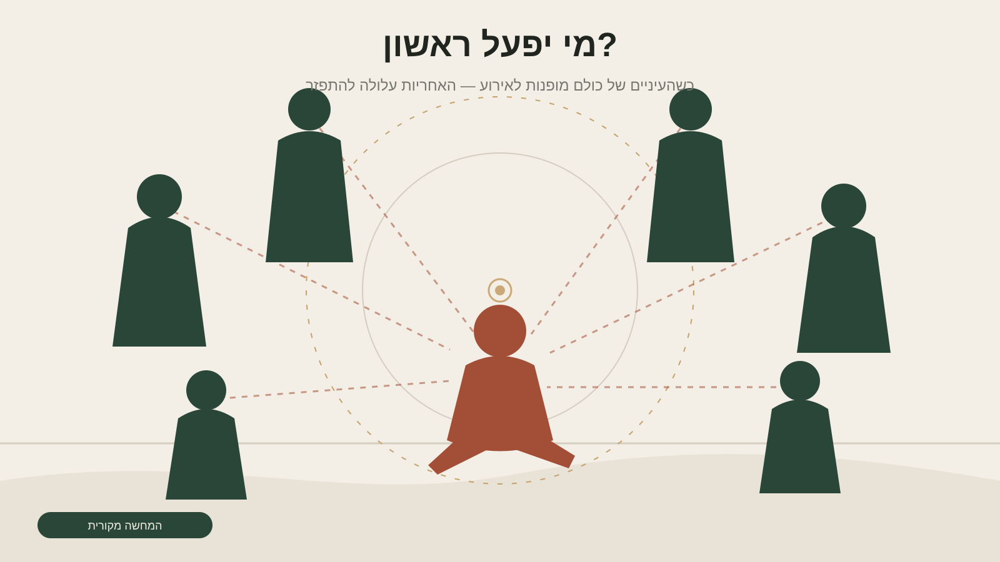
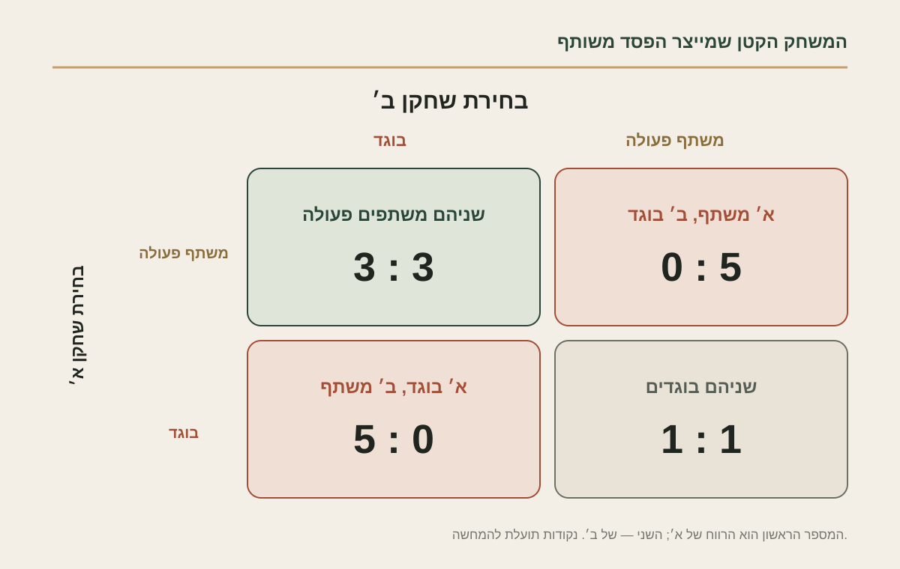
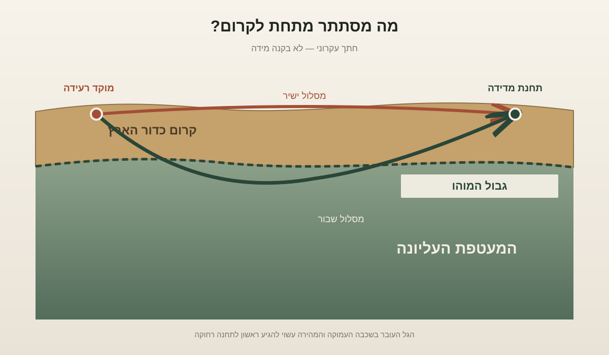

מרחיבים את גבולות הסקרנות
העולם גדול
מכפי שנדמה לנו.
רעיונות, תגליות, אנשים ומקומות שלא תמיד מגיעים אל מרכז הבמה. כתיבה שמחברת בין תחומי ידע, בודקת את הפרטים ומנסה להבין מה עומד מאחורי הדברים.
לכתבות האחרונות ← הכתבה המובילה · גאוגרפיה פוליטית
הכתבה המובילה · גאוגרפיה פוליטית
רעיונות, תופעות ותגליות
כתבות
גאוגרפיה פוליטית · יחסים בינלאומיים · כלכלה
הנציגות שבנמל: מה מפת הדיפלומטיה של אוגנדה מגלה על כוח וריבונות
למה מדינה ללא מוצא לים מחזיקה קונסוליה דווקא בנמל של שכנתה? מפת הנציגויות של אוגנדה חושפת את הקשר בין דיפלומטיה, מסדרונות סחר, מוסדות אזוריים וריבונות.
לקריאת הכתבה ← ארכאולוגיה · היסטוריה פוליטית
ארכאולוגיה · היסטוריה פוליטיתארכאולוגיה · כתב ומנהל
השבר שהקדים את הארמון
לוחית חרס זעירה מצטרפת לעדויות על כמה מרכזי כוח בממלכת פילוס הקדומה.
לקריאת הכתבה ← תרגום ידע · ימי הביניים
תרגום ידע · ימי הבינייםהיסטוריה אינטלקטואלית · תרגום
האיש שחיבר בין אריסטו לפורים
קלונימוס בן קלונימוס תרגם פילוסופיה ומדע, העביר משל ערבי על בעלי חיים וכתב סאטירה חברתית.
לקריאת הכתבה ← היסטוריה של המדע · כתבי יד
היסטוריה של המדע · כתבי ידמתמטיקה · כתבי יד
הספר שמחק את ארכימדס — והחזיר אותו לחיים
כתב יד תפילה מימי הביניים הסתיר טקסטים של ארכימדס. גילוי דף אבוד פותח מחדש את סיפורו של אוצר מדעי.
לקריאת הכתבה ←סוציולוגיה · ביולוגיה · חינוך
למי שיש — יינתן עוד
איך יתרון קטן עשוי להפוך למנגנון שמגדיל את עצמו, ולמה פערים נוטים להתרחב.
לקריאת הכתבה ←
פסיכולוגיה חברתית · אחריותפסיכולוגיה חברתית · סוציולוגיה
כשהאחריות מתפזרת: הפסיכולוגיה של העומד מן הצד
מדוע קהל עלול לעכב עזרה — ומתי דווקא נוכחותם של אחרים מגדילה את הסיכוי שמישהו יפעל.
לקריאת הכתבה ←
תורת המשחקים · שיתוף פעולהתורת המשחקים · אבולוציה
למה שני אנשים רציונליים בוחרים להפסיד יחד?
איך החלטות רציונליות של יחידים עלולות להוליד תוצאה גרועה לכולם.
לקריאת הכתבה ←היסטוריה · יחסים בינלאומיים
המלחמה שבה פינלנד נולדה מחדש
איך מלחמה בין רוסיה לשוודיה יצרה מסגרת מדינית שממנה צמחה פינלנד המודרנית.
לקריאת הכתבה ← ארכאולוגיה · כתובות עתיקות
ארכאולוגיה · כתובות עתיקותארכאולוגיה · היסטוריה · מקרא
האבן שאמרה "בית דוד"
מה כתובת ניצחון ארמית שנשברה ושימשה חומר בנייה מספרת על ראשית המלוכה בישראל?
לקריאת הכתבה ←מוזיקה · חינוך · תיאטרון
ללמוד מוזיקה ברגליים
איך אמיל ז'אק־דלקרוז הפך את הגוף לכלי נגינה ולשיטת לימוד.
לקריאת הכתבה ←
גאופיזיקה · מבנה כדור הארץמדע · היסטוריה של המדע
הגבול שמתחת לרגלינו
איך רישום של רעידת אדמה חשף את הגבול בין הקרום למעטפת.
לקריאת הכתבה ←מתמטיקה · היסטוריה של המדע
המספרים הראשוניים הגדולים והמרדף אחריהם
איך נוסחה פשוטה הפכה לכלי מרכזי בחיפוש אחר מספרים ראשוניים עצומים?
לקריאת הכתבה ←ספורט · פיזיקה · אמנות
הקרח שבין האמנות למספרים
איך ניקוד, פיזיקה ופוליטיקה נפגשו בגמר האולימפי של 2018.
לקריאת הכתבה ←תרבות · קולנוע וטלוויזיה
מאיה מיטשל: מהחוף האוסטרלי אל מרכז הבמה
סיפורה של שחקנית שמצאה את קולה בין ליסמור ללוס אנג'לס.
לקריאת הכתבה ←חלונות לעולמות אחרים
גילוי האינטרנט
יש ברשת הרבה יותר ממה שמופיע בכותרות ובתוצאות החיפוש הראשונות. אנחנו יוצאים לחפש ספריות דיגיטליות, ארכיונים, מאגרי ידע, פרויקטים קהילתיים ואתרים שמציעים דרך אחרת לראות את העולם.
ארצות הברית · עיתונות · תרבות
לא רק רדיו: המסע אל NPR, מערכת החדשות והתרבות של אמריקה
מכתבות תחקיר ועד Tiny Desk ואלפי המלצות ספרים: סקירה ביקורתית של האתר, המודל העיתונאי, המימון והמתחים שמאחורי השידור הציבורי האמריקאי.
לסקירת האתר ←
כלכלה עולמית · חקלאות · זכויות עובדים
מי באמת מרוויח מהקפה שלנו? מסע אל Fairtrade International
מאחורי סמל הסחר ההוגן פועלת מערכת של תקנים, פרמיות, פיקוח ונתונים. סקירה ביקורתית של המנגנון שמנסה לשנות את יחסי הכוח בשרשרת האספקה.
לסקירת האתר ←תחומי עניין
בלי גבולות קשיחים
מדע וטכנולוגיה
מהחלקיק הקטן ביותר ועד מבנה היקום.
היסטוריה וארכאולוגיה
הכוחות, האנשים והמקריות שעיצבו את העולם.
פילוסופיה וחברה
רעיונות שמעצבים את הדרך שבה אנו מבינים את עצמנו.
אמנות ותרבות
צורות חדשות לראות, להרגיש ולפרש את המציאות.
טבע ואדם
מערכות החיים, הסביבה והמפגש ביניהן.
רשת וידע
מאגרי מידע, פרויקטים דיגיטליים וקהילות יוצאות דופן.
על השכל הפועל
לא רק לדעת מה קרה,
אלא להבין איך ולמה.
השכל הפועל הוא מרחב תוכן עצמאי לסקרנות רצינית. אנחנו מחפשים סיפורים במקומות לא צפויים, בוחנים את המקורות, מציבים כל תופעה בהקשר רחב ומנסים לכתוב על נושאים מורכבים בשפה בהירה ונגישה — בלי לוותר על הדיוק.